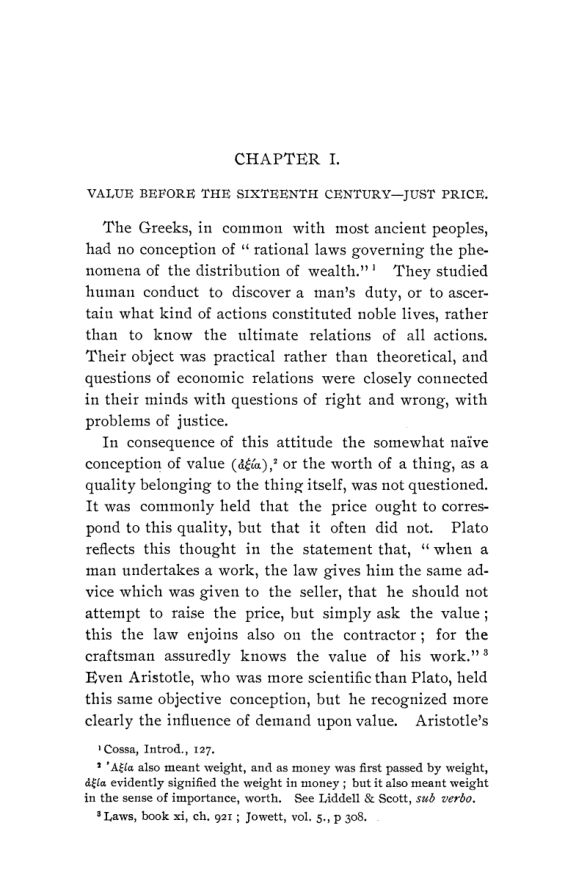

Sewall, 1901: do preço justo ao valor subjetivo, antes de Adam Smith
Leitura: 10 min
Em 1901, Hannah Robie Sewall refez o caminho da ideia de valor, de Aristóteles e Tomás de Aquino a Galiani, Turgot e Steuart: como o “preço justo” virou pergunta sobre o que determina o preço.


1588. O mercador Bernardo Davanzati publica umas Lições sobre a moeda para mostrar o dano de rebaixar a cunhagem. No meio do argumento, um exemplo: um ovo, cujo preço pode ser meio grão de ouro, bastou para manter vivo o conde Ugolino por onze dias na Torre da Fome, enquanto todo o ouro do mundo não teria bastado. Como coisas tão valiosas por natureza podem valer tão pouco ouro?
A pergunta está no centro de The Theory of Value before Adam Smith, de Hannah Robie Sewall, Ph.D., publicada em agosto de 1901 como o nº 3 do vol. 2 da terceira série das Publications of the American Economic Association. O livro tem três capítulos e uma conclusão: o valor antes do século XVI, o valor nos séculos XVI e XVII e o valor na formação da ciência econômica até 1776. Em cada etapa, a autora liga as ideias às condições econômicas em que surgiram.
O que os gregos e os romanos entendiam por valor?
Para Sewall, os gregos estudavam a conduta humana para saber o que era justo, não para descobrir leis da distribuição da riqueza. Aristóteles distingue dois usos de um sapato: calçar e trocar. O segundo é derivado, porque o sapato não é feito para ser objeto de escambo. Na Ética, a troca justa é a que deixa as partes com o mesmo que tinham antes, e a medida comum das coisas é a procura por serviços mútuos, representada pelo dinheiro.
Os romanos, segundo a autora, não tinham teoria do valor; usavam a mesma palavra, pretium, para preço e valor. O jurista Paulo admitia que cada parte procurasse levar vantagem sobre a outra na compra e venda. Pédio dizia que os preços não se medem pela afeição nem pela utilidade para um indivíduo, mas têm validade comum. Um rescrito de Diocleciano permitia ao vendedor desfazer a venda feita por menos da metade do preço verdadeiro.
Como a Idade Média chegou ao “preço justo”?
Com as invasões bárbaras, diz Sewall, veio uma economia natural: terra em troca de serviço, bens trocados por bens, sem moeda e sem barganha. O valor de um serviço dependia da posição social de quem o prestava, não do tempo gasto nem da utilidade para quem o recebia. Por volta do ano 1000, a economia monetária começou a substituir a natural, e se espalhou pela Europa nos três séculos seguintes. A compra e venda passou a ocupar a vida diária, e os teólogos tiveram de tratar do assunto.
Tomás de Aquino é o centro do primeiro capítulo. Na Suma Teológica, ele sustenta que a compra e venda existe para vantagem comum e não deve pesar mais para um lado. Daí a regra:
“vender uma coisa mais caro ou comprá-la mais barato do que ela vale” (“to sell a thing dearer or to buy a thing cheaper than it is worth”)
Essa conduta, para Aquino, é injusta em si. Mas Sewall mostra as nuances. O preço das coisas vendáveis, citando Agostinho, não segue a hierarquia da natureza: às vezes um cavalo vale mais que um escravo. O vendedor que leva grão a um lugar e sabe que outros comerciantes vêm atrás pode vender ao preço corrente sem avisar; avisar seria virtude maior, não dever de justiça. E o preço justo é matéria de estimativa: um pouco a mais ou a menos não destrói a justiça. O ganho do comerciante é lícito quando serve a fim honesto e funciona como salário de seu trabalho; ele pode vender mais caro por melhorar o artigo, pela diferença de lugar ou de tempo e pelo risco do transporte.
Na síntese de Sewall, o valor verdadeiro dos canonistas era a remuneração justa do trabalho do produtor, segundo o padrão de vida de sua classe. Só a estimativa comum da comunidade o revelava, e ela não podia ser confiada ao mercado.
Quando o preço de mercado passou a ser o preço justo?
Com o comércio, a estimativa comum passou a incorporar qualidade, desejo das pessoas e oferta. O jurista eclesiástico Scaccia, no início do século XVII, publicou um tratado sobre comércio e câmbio que ficou por um tempo sob interdição da Igreja e depois foi declarado conforme ao direito canônico.
A Reforma, segundo a autora, não trouxe avanço imediato: Lutero voltou às doutrinas dos primeiros canonistas. O avanço veio de dois grupos: os filósofos do direito natural, como Grotius e Pufendorf, e os empiristas, que escreviam para defender alguma medida de política.
O valor depende da coisa ou de quem a deseja?
Davanzati respondeu com uma proporção. Todas as coisas que os homens desejam valem, somadas, todo o dinheiro em circulação; a fração que cabe a cada coisa corresponde à fração de felicidade que ela proporciona. Sewall lê aí, em forma rudimentar, a ideia de que os valores relativos dependem da utilidade subjetiva.
Montanari dedicou páginas a mostrar que as necessidades de que falava Aristóteles incluíam os desejos. Nicholas Barbon foi adiante: as necessidades do espírito são infinitas, e pérolas e diamantes valem por serem distintivos de honra. Locke explicou o valor de mercado pela quantidade e pela saída do bem, o “vent”; Law trocou a palavra por demanda e ilustrou o ponto com o exemplo clássico da água e dos diamantes.
O custo explica o valor?
Petty buscou uma equivalência entre terra e trabalho. Pôs, em exemplo, um bezerro desmamado em dois acres de pasto cercado: a carne ganha em doze meses, mais os juros do valor do bezerro, seria a renda anual da terra, e o excedente produzido pelo trabalho seria o salário, tudo medido em dias de comida. Cantillon contou o custo de outro modo: um copo de água do Sena não custa nada, mas nas ruas de Paris se paga um sol por ele, o preço do trabalho de transportá-lo.
Esses autores, na classificação de Sewall, explicavam o valor de forma mecânica: oferta e demanda no curto prazo, custo de produção como árbitro permanente. A autora observa que eles tratavam como simples e invariáveis as necessidades e os hábitos que determinam a subsistência do trabalhador.
O que os psicólogos do século XVIII acrescentaram?
Galiani, abade de Nápoles, analisou o valor como composto de utilidade e raridade. Ar e água não têm valor porque não são raros; um saco de areia das praias do Japão seria raro, mas sem valor por não ter utilidade. Chamava de paralogismos vergonhosos frases como “uma libra de pão é mais útil que uma libra de ouro”, porque útil é termo relativo ao estado de cada pessoa. Sua definição:
“Chamo utilidade a aptidão que uma coisa tem para nos proporcionar felicidade” (“I call utility the aptitude that a thing has for procuring us happiness”)
Turgot pôs em oposição a utilidade e o custo: a água, apesar de útil, não é preciosa onde abunda, mas no deserto tem preço infinito. Condillac voltou a utilidade e raridade. Para os três, diz Sewall, as forças que determinam o valor são internas, complexas e variáveis, e o preço de mercado é aquele em que compradores e vendedores conseguem concordar ao comparar suas avaliações pessoais.
A que conclusão a autora chega?
Sewall propõe abandonar a distinção entre valor de uso e valor de troca, que considera imprecisa, porque trocar é uma forma de usar. Em seu lugar, sugere distinguir o valor pessoal, produto da mente de um indivíduo, do valor social, produto comum de muitos. O valor de troca seria uma forma de valor social, que dependeu de duas condições históricas: produzir para vender e um interesse generalizado pelas atividades econômicas. Ela observa que, mais de um século e um quarto depois, ainda não havia formulação da lei do valor com aprovação geral. Mas registra que quase não há
“proposição importante na discussão moderna do valor” (“proposition of importance in the modern discussion of value”)
que não tenha sido enunciada ou sugerida pelos autores anteriores a Adam Smith.
Na minha leitura
Na minha leitura, o método do livro é o que lhe dá unidade. Sewall não trata a teoria do valor como uma sequência de autores, mas como resposta a condições econômicas: enquanto o serviço era pago por posição social, não havia por que perguntar o que determina o preço; quando a economia passou a produzir para vender, a pergunta se impôs. A trajetória que ela descreve é a passagem de uma questão normativa, qual deveria ser o preço, para uma positiva, o que faz o preço ser o que é. O ponto intermediário, o preço justo como faixa e não como ponto, é revelador: a regra moral foi se alargando até caber dentro da concorrência.
O conteúdo econômico também mostra quanto os ingredientes estavam disponíveis cedo. O ovo de Davanzati, a água e os diamantes de Law, a areia do Japão de Galiani e a água no deserto de Turgot são versões do mesmo problema: o valor não acompanha a utilidade total, mas a utilidade diante da escassez. Faltava a ferramenta para juntar as duas coisas na margem. E a solução de Aquino para o comerciante que sabe da chegada de mais grão continua a ser o caso mais claro de um dilema que nunca saiu da economia: o que o mercado deve à informação que só um lado possui.
Glossário
- Preço justo
- na doutrina canônica, o preço que corresponde ao valor verdadeiro de uma coisa, segundo a estimativa comum.
- Canonistas
- juristas do direito da Igreja, que trataram de preço, usura e comércio na Idade Média.
- Economia natural
- economia sem moeda, em que terra, serviços e bens se trocam diretamente.
- Valor de uso
- a importância de um bem pelo serviço que presta a quem o usa.
- Valor de troca
- o poder de um bem de obter outros bens na troca.
- Vent
- termo de Locke para a saída ou venda de um bem, próximo da ideia de demanda efetiva.
- Fisiocratas
- economistas franceses do século XVIII que viam na agricultura a fonte da riqueza.
- Utilidade subjetiva
- a capacidade de um bem de satisfazer desejos, avaliada pela pessoa que o deseja.
Fontes
- The Theory of Value before Adam Smith (pp. 1–128). JSTOR · Internet Archive (PDF)
- Sumário da edição no JSTOR: Publications of the American Economic Association, 3ª série, vol. 2, nº 3.
Documento em domínio público (EUA, publicado antes de 1931), via JSTOR Early Journal Content e Internet Archive. Resumo e comentário do autor deste site, sem afiliação com a American Economic Association. Encontrou um erro? Escreva: a correção é publicada no próprio texto, com data.
← Nº 58 · Davis, 1901: o banco da terra que o Parlamento fechou por lei Nº 60 · Clow, 1901: como as cidades americanas aprenderam a fazer orçamento →